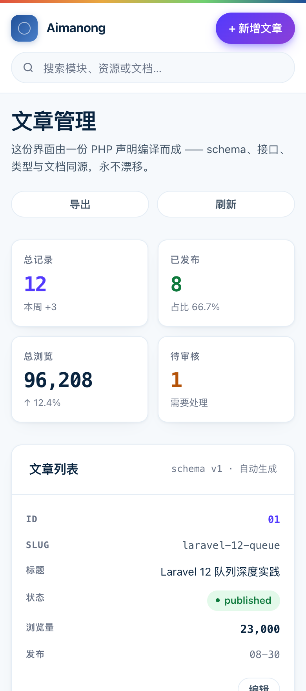
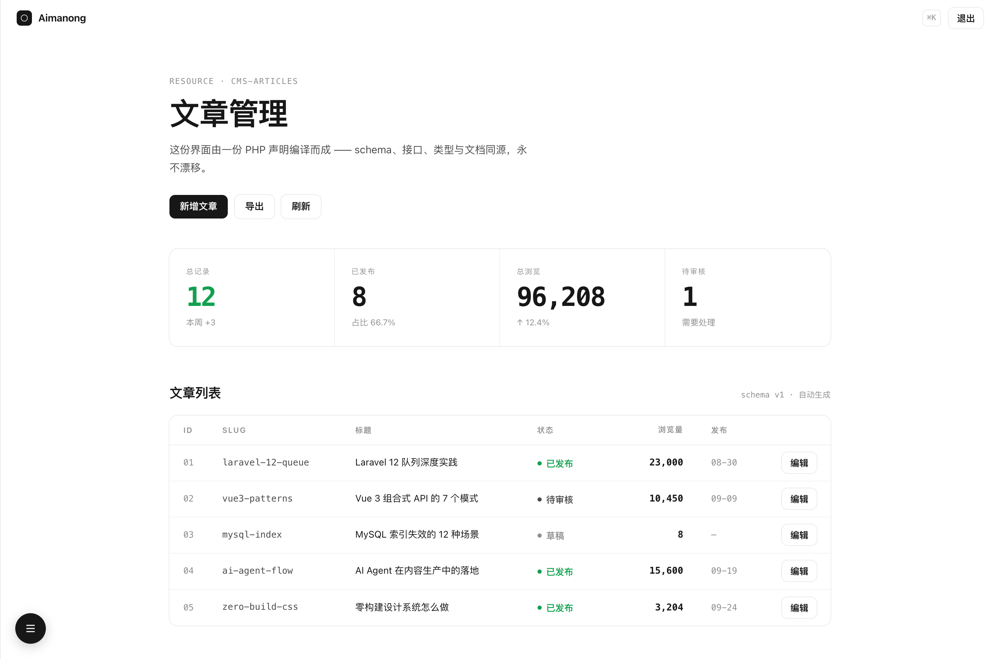
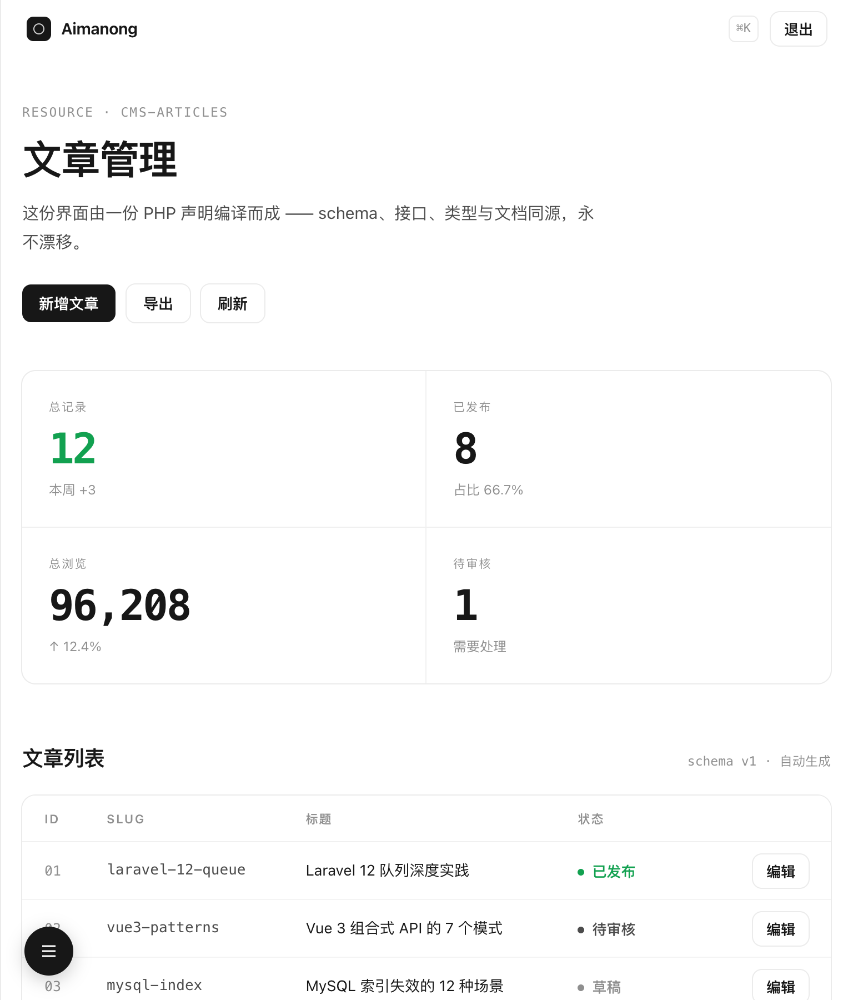
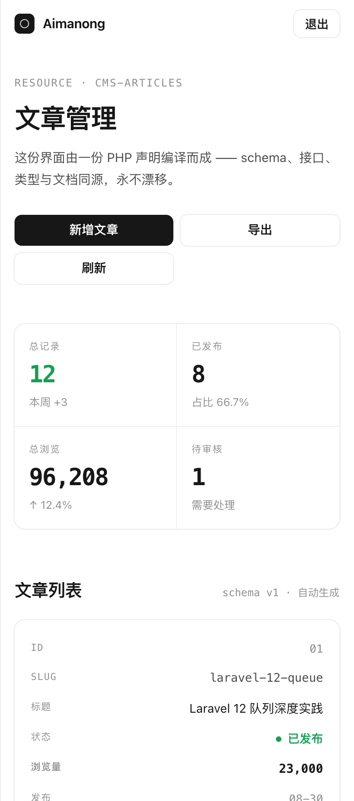

同一份数据（文章管理 · 5 条记录），两种对「干净」的不同理解。全部通过 320→2560px 逐像素布局扫描。

| 气质 | 明亮、有生命力，颜色是主动的 |
| 画布 | 冷白 #f6f9fc（Stripe 原值） |
| 强调色 | 紫 #533afd + 渐变 CTA |
| 品牌表达 | 顶部 4px 通栏渐变条（LOGO 四色按序） |
| 布局 | 顶栏 96px 三层信息 + 侧栏 196px |
| 冲击来源 | 44px 大标题 + 34px 彩色数字 + 渐变 CTA 发光 |
| 状态样式 | 彩色胶囊 chip |
| 体积 | 15.1 KB（单文件零依赖） |



| 气质 | 绝对克制，颜色是稀缺的 |
| 画布 | 纯白 #ffffff |
| 强调色 | 绿 #12a150（全站唯一彩色） |
| 品牌表达 | 仅 logo 一处，无装饰 |
| 布局 | 无常驻侧栏（悬浮圆钮 / 抽屉） |
| 冲击来源 | 44px 大标题 + 大量留白 + 阴影环边框 |
| 状态样式 | 小圆点 + 文字，无底色 |
| 体积 | 14.2 KB（单文件零依赖） |